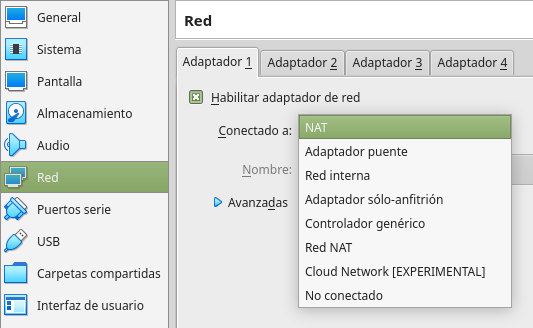
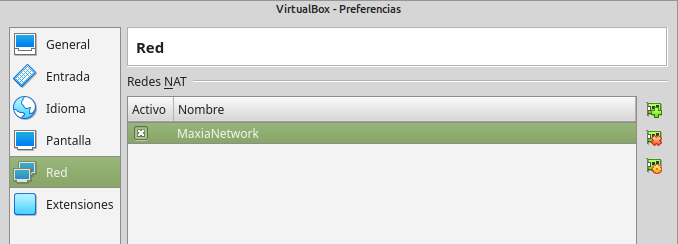
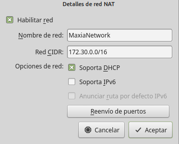
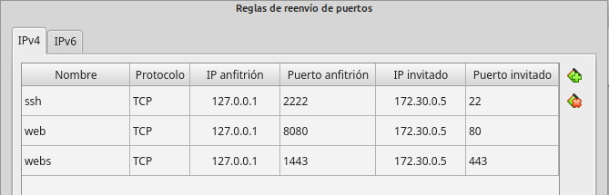
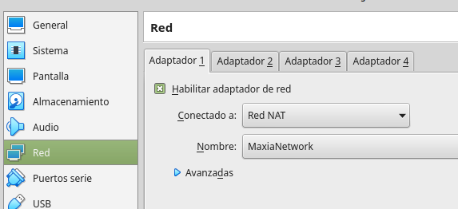
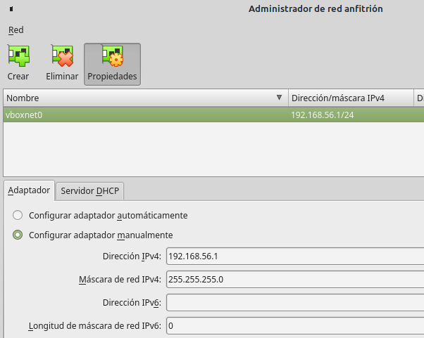

VirtualBox
Opciones de Red
Índice
- Sin conexión
- NAT
- Red NAT / NAT Network
- Adaptador Puente / Bridged Adapter
- Red Interna / Internal Network
- Adaptador Sólo-Anfitrión / Host-Only Network
- Adaptador Genérico / Generic Adapter
- Cloud Network
Configuración de red en MV
NAT
- Por defecto. Router virtual transparente
- El anfitrión (host) no ve al invitado (MV)
- El invitado ve al antitrión
- Los invitados no pueden verse entre si
- HAY ACCESO A INTERNET
Red NAT
- Red privada propia entre MV
- Router explícito, configurable
- Anfitrión se conecta: REENVÍO DE PUERTOS
- HAY ACCESO A INTERNET
Red NAT: Configuración general
 Red NAT: Configuración concreta
Adaptador Puente
Bridged adapter
- IP adicional en red local
- MV expuesta a la red
- HAY ACCESO A INTERNET
Internal Network
- No soporta DHCP
- Conexión entre 2 o más MV
- No conexión hacia/desde anfitrión
- NO HAY CONEXIÓN A INTERNET
Host-Only Network
- Como red interna + anfitrión
- MV se ven entre si
- Interfaz virtual en anfitrión: 192.168.56.1
Host-Only Network: Configuración
Archivo —> Administrador de red anfitrión
Sin conexión
No connection
Quizás suene raro pero...
NO HAY CONEXIÓN A INTERNET
¿Por qué es útil?
Jose Sánchez
“Errare humanum est, sed perseverare diabolicum”Si encuentras errores, envíame un correo a: